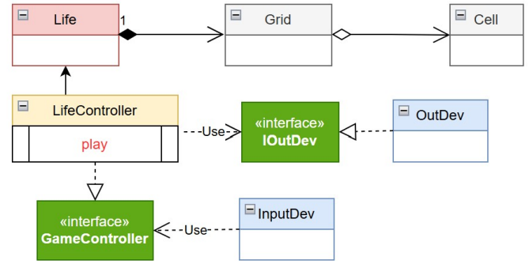

public interface ICell {
void setStatus(boolean v); // Qualunque cosa sia una cella, esiste solo la rappresentazione della cella
boolean isAlive(); // La cella come entità ha la capacità di rispondere ad una query, che mi restituisce un valore, ossia vivo o morto.
void switchCellState(); // La cella è un ente che ha la capacità di, attraverso questo metodo, cambiare stato.
}
Cosa intende il committente con la parola Griglia?
public interface IGrid {
public int getRowsNum(); //Per implementare getRowsNum devo conoscere com'è fatta internamente la griglia, ossia è primitiva.
public int getColsNum();
public void setCellValue(int x, int y, boolean state); // Non è un metodo indispensabile, ma è molto comodo avere un metodo che mi permette di modificare lo stato di una cella.
public ICell getCell(int x, int y); // è indispensabile avere un metodo che mi restituisce una cella.
public boolean getCellValue(int x, int y);
public void reset(); //Non è indispensabile, ma può essere opportuno avere un metodo che resetta gli stati dei componenti della griglia, ossia le celle a un valore default, ad esempio tutte le celle morte.
}
-------------------------------------------------------------------------
public class CellTest {
private ICell c;
@Before
public void setup() {
System.out.println("ConwayLifeTest | setup");
c = new Cell();
}
@After
public void down() {
System.out.println("ConwayLifeTest | down");
}
@Test
public void testCellAlive() {
System.out.println("ConwayLifeTest | doing alive");
c.setStatus(true);
boolean r = c.isAlive();
assertTrue(r);
}
@Test
public void testCellDead() {
System.out.println("ConwayLifeTest | doing dead");
c.setStatus(false);
boolean r = c.isAlive();
assertTrue( !r);
}
}
Test plan Grid:
public class GridTest {
private static final int nRows=5;
private static final int nCols=5;
private Grid grid;
@Before
public void setup() {
System.out.println("GridTest | setup");
grid= new Grid(nRows,nCols);
}
@After
public void down() {
System.out.println("GridTest | down");
}
@Test
public void testDims() {
System.out.println("testDims ---------------------" );
int nr = grid.getRowsNum();
int nc = grid.getColsNum();
assertTrue( nr==nRows && nc==nCols );
}
@Test
public void testCGridCellValue() {
System.out.println("testCGridCellValue ---------------------" );
grid.setCellValue(0,0,true);
assertTrue( grid.getCellValue(0,0) );
assertFalse( grid.getCellValue(0,1) );
}
@Test
public void testGridRep() {
System.out.println("testGridRep ---------------------" );
System.out.println(""+grid);
assertTrue( grid.toString().startsWith(". . . . ."));
}
@Test
public void testPrintGrid() {
System.out.println("testPrintGrid ---------------------" );
grid.setCellValue(0,0,true);
grid.setCellValue(0,1,true);
grid.setCellValue(0,2,true);
grid.setCellValue(0,3,true);
grid.setCellValue(0,4,true);
//grid.printGrid();
}
}
